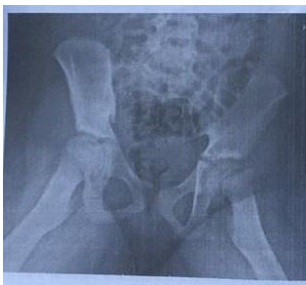
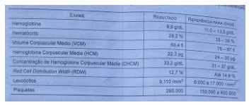
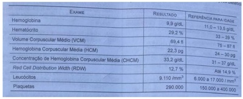
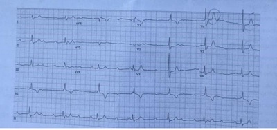
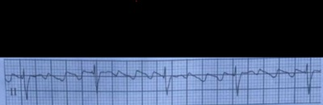
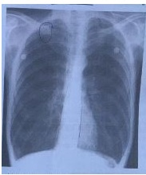
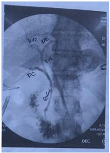
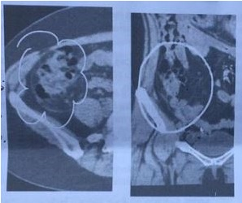

Questão 1 · Programa Nacional de Imunizações · Calendário dos idosos · 4000127358As vacinas disponíveis para os idosos, na rede pública são:
A tríplice viral, febre amarela, hepatite C e influenza.
B varicela, febre amarela, hepatite B e influenza.
C tríplice viral, febre amarela, hepatite A e influenza.
D hepatite A, dupla adulto, rubéola e sarampo.
E dupla adulto, varicela, hepatite A e sarampo.
Questão 2 · Tratamento e Condutas · Diagnóstico · 4000115558Lactente do sexo masculino, 6 meses de idade, sem comorbidades, é levado ao pronto socorro por história de queda há 1 hora. Os familiares referem que a criança apresentou uma queda após tentar pular a grade do berço. Realizada radiografia do membro inferior esquerdo que demonstra fratura espiralada de fêmur. Realizada imobilização do membro. Para investigação da principal hipótese diagnóstica, está indicado:
A dosagem de cálcio, fosfatase alcalina e vitamina D.
B realização de cintilografia óssea com tecnécio.
C coleta de hemograma, VDRL e líquor.
D dosagem de função renal, gasometria e albumina sérica.
E realização de radiografia de ossos longos e fundo de olho.
Questão 3 · Método de coleta · Tratamento · 4000115522Lactente, 9 meses de idade, sexo feminino, sem antecedentes mórbidos, apresenta quadro de febre até 40ºC há 2 dias, sem qualquer outro sintoma associado. Ao exame clínico, criança em bom estado geral, sem alterações significativas. Foi optado pela coleta de urina tipo 1 e urocultura por saco coletor. A urina tipo 1 revelou leucocitúria de 250.000/ml e nitrito positivo. A conduta indicada neste caso é:
A Internação hospitalar e iniciar tratamento com antimicrobiano parenteral empírico atéresultado de urocultura.
B Prescrição de sintomáticos e aguardar resultado de urocultura para definir necessidadede antimicrobiano.
C Recoleta de urocultura por sondagem vesical de alívio e iniciar tratamento ambulatorial com antimicrobiano oral.
D Recoleta de urocultura por sondagem vesical de alívio e internar para tratamento comantimicrobiano endovenoso.
E Coleta de função renal e eletrólitos e aguardar resultados para definir a via deadministração do antimicrobiano.
Questão 4 · Síndrome Colinérgica · 4000115493Menina, 13 anos de idade, é trazida pelos pais ao pronto socorro. Eles referem que a adolescente é previamente hígida, ela estava trancada no quarto há algumas horas sem responder, sendo necessário arrombar a porta, quando foi encontrada caída no chão. No momento, a adolescente encontra-se desacordada, com abertura ocular somente com estímulo doloroso, sialorreia intensa, presença de miose bilateral simétrica, com reflexo fotomotor diminuído e presença de fasciculações musculares. A ausculta pulmonar tem roncos e sibilos difusos, com presença de desconforto respiratório, saturação de 92% em ar ambiente, frequência respiratória de 30 irpm, frequência cardíaca de 50 bpm, tempo de enchimento capilar de 4 segundos. A adolescente foi levada imediatamente a sala de emergência e monitorizada. Frente aos achados, está indicada a administração de
A acetilcisteína.
B atropina.
C bicarbonato de sódio.
D flumazenil.
E naloxone.
Questão 5 · Diagnóstico e classif icação radiográf ica · 4000115491Menino, 12 anos de idade, é levado ao pronto socorro por queixa de dor na virilha esquerda, irradiada para o joelho esquerdo e claudicação há 1 semana. Refere piora dos sintomas ao longo do dia. Nega outros sintomas associados. Nega histórico de trauma recente. Refere apenas um quadro respiratório compatível com resfriado comum que ocorreu na semana passada, já resolvido. Ao exame clínico, é possível notar que o paciente apresenta marcha em rotação externa do membro inferior, com grande di culdade de mobilizar devido a dor, não sendo possível realizar outras manobras. Realizada radiografia de quadril conforme figura a seguir: O diagnóstico mais provável é:

A Sinovite transitória de quadril.
B Doença de Legg-Calvé-Perthes.
C Epifisiolistese proximal do fêmur.
D Artrite séptica de quadril.
E Síndrome de Osgood-Schlatter.
Questão 6 · Acidose metabólica · Acidose metabólica com ânion gap normal · Nef rologia · 4000115470Menino, 3 anos de idade, previamente hígido, deu entrada no pronto socorro por quadro de febre de até 38,2ºC, associado a vômitos e diarreia, sintomas iniciados há 2 dias. A mãe refere que são de 8-10 episódios/dia de fezes líquidas, sem sangue ou muco. Na chegada, avaliado como desidratado grave. Obtido acesso venoso e colhido exames laboratoriais com grande di culdade devido a desidratação. Já iniciada expansão endovenosa com soro siológico 20 mL/kg. Obtidos os resultados dos exames colhidos a chegada, com sódio: 142 mEq/L, potássio: 6,3 mEq/L, ureia: 40 mg/dL, creatinina: 0,4 mg/dL, gasometria venosa: pH 7,30, bicarbonato: 18 mEq/L, pCO2: 35 mmHg. Frente aos achados, optado por fazer um eletrocardiograma, que demonstrou taquicardia sinusal, sem outras alterações. Considerando estes achados, a conduta imediata é:
A gluconato de cálcio endovenoso.
B bicarbonato de sódio endovenoso.
C salbutamol inalatório.
D solução de insulina e glicose endovenosa.
E recoleta dos exames laboratoriais.
Questão 7 · Tratamento Complicações · Complicações · 4000115442Menino, 6 anos de idade, previamente hígido, deu entrada em pronto socorro por quadro de tosse, desconforto respiratório e febre de até 39,5°C há 1 dia. Realizada radiogra a de tórax que evidenciou pneumonia a direita com presença de derrame pleural. Optado pela toracocentese, com saída de 50 mL de líquido purulento. Frente a estes dados, além da antibioticoterapia endovenosa, está indicado:
A Realizar dosagem de glicose, pH, desidrogenase láctica e cultura do líquido pleural,para decidir sobre drenagem torácica.
B Realizar dosagem de proteínas e desidrogenase láctica séricas e do líquido pleural,para decidir sobre a drenagem torácica.
C Realizar tomografia computadorizada de tórax com contraste para decidir sobredrenagem torácica.
D Manter observação clínica rigorosa, sem necessidade de drenagem torácica ouqualquer outra intervenção neste momento.
E Enviar líquido pleural para a cultura, e já está indicada a realização de drenagemtorácica neste momento.
Questão 8 · Quadro clínico · Diagnóstico · Tratamento · 4000115437Adolescente do sexo feminino, 14 anos de idade, previamente hígida, apresenta quadro de febre de até 38,5°C há 3 dias e, há 1 dia, com surgimento de exantema pruriginoso pelo corpo. Sem outras queixas. Ao exame, adolescente em bom estado geral, com presença de máculas, pápulas, vesículas e pústulas espalhadas pelo corpo, com acometimento inclusive do couro cabeludo e mucosa oral. Sem outras alterações ao exame clínico. Está indicado para o tratamento do quadro atual:

A apenas sintomáticos.
B imunoglobulina.
C vitamina A.
D aciclovir.
E ceftriaxone.
Questão 9 · RNs maiores de 34 semanas · 4000115397De acordo com as Diretrizes da Sociedade Brasileira de Pediatria, ao nascimento de um recém-nascido (RN) com idade gestacional acima de 34 semanas, alguns parâmetros devem ser avaliados para decidir pelo clampeamento tardio do cordão umbilical. É necessário, por exemplo, que a placenta esteja com a circulação preservada, sem descolamento prematuro de placenta, placenta prévia ou rotura ou prolapso ou nó verdadeiro de cordão. Além disso, também deve ser avaliado:
A se o RN está respirando ou chorando e se apresenta tônus em flexão.
B se o RN apresenta tônus em flexão e se há ausência de mecônio.
C se há ausência de mecônio e se a frequência cardíaca acima de 100 bpm.
D se a frequência cardíaca acima de 100 bpm e se o RN está rosado.
E se o RN está rosado e se está respirando ou chorando.
Questão 10 · Prevenção primária · 4000115372Menino, 8 anos de idade, apresenta quadro de odinofagia e febre de até 39°C há 2 dias. Nega tosse ou coriza. Sem queixas gastrointestinais ou urinárias. Sem comorbidades prévias. Ao exame, a criança está em com estado geral e na oroscopia apresenta amigdalas hiperemiadas e hipertro adas, com petéquias em palato. Linfonodos broelásticos, de até 1 cm palpáveis em cadeia cervical anterior e posterior. Sem outras alterações significativas ao exame clínico. Foi colhida uma pesquisa rápida de estreptococo, com resultado negativo. Então, foi optado por colher um cultura de orofaringe, prescrito apenas medicações sintomáticas e orientado retorno obrigatório em 72 horas, para checar o resultado da cultura e decidir sobre a necessidade de antibioticoterapia. Pensando na profilaxia de febre reumática, pode-se afirmar que
A a conduta é inadequada, pois o antibiótico deve ser introduzido nas primeiras 72 horasdos sintomas para garantir a prevenção de febre reumática.
B a conduta não influenciará na prevenção de febre reumática, pois se a pesquisa rápidade estreptococo veio negativa, logo, este risco está excluído.
C a conduta é adequada, pois para garantir a prevenção de febre reumática, o antibióticopode ser introduzido atá o 9° dia de doença.
D a conduta não terá nenhuma relação com a prevenção de febre reumática, pois oquadro é típico de mononucleose infecciosa.
E a conduta é inadequada, pois deve ser prescrita imediatamente penicilina benzatinapara o caso índice e para todos os contactantes abaixo de 7 anos de idade.
Questão 11 · Conduta · 4000115356Recém-nascido do sexo feminino, 3 dias de vida, está na Unidade de Cuidados Intermediários recebendo soro endovenoso. Trata-se de recém-nascido grande para idade gestacional, macrossômico, lha de mãe diabética, que apresentou hipoglicemia sintomática. No momento, está recebendo 288 mL de soro glicosado a 10% para infundir em 24 horas. Considerando que o peso atual da criança é 4.000 g, a taxa de infusão de glicose prescrita, em mg/kg/min, é:
A 3.
B 5.
C 7,2.
D 12.
E 20.
Questão 12 · Epidemiologia · Fibrose Cística · Diagnóstico · 4000115342Assinale a alternativa que contém um dos agentes mais comuns responsáveis pela exacerbação pulmonar de pacientes com fibrose cística.
A Proteus mirabilis.
B Kingella kingae.
C Bacteroides fragilis.
D Stenotrophomonas maltophilia.
E Pasteurella multocida.
Questão 13 · Fisiopatologia da def iciência de G6PD · Hiperbilirrubinemia não f isiológica · 4000115333O mecanismo que agrava a icterícia neonatal na deficiência da enzima G6PD (glicose 6 fosfato desidrogenase):
A Redução da proteção das hemácias ao estresse oxidativo, intensificando o processo dehemólise.
B Redução da atividade da enzima UDP-glicuronil-transferase, prejudicando aconjugação de bilirrubinas.
C Aumento da disponibilidade da bilirrubina livre na luz intestinal, intensificando o cicloenterro-hepático de bilirrubinas.
D Aumento da atividade da enzima beta-glicuronidase no intestino, provocandosobrecarga de bilirrubinas ao hepatócito.
E Prejuízo no transporte de bilirrubinas dentro do hepatócito, limitando a captaçãohepática de bilirrubinas.
Questão 14 · Ref ratariedade ao tratamento da anemia f erropriva · 4000115312Menina, 1 ano e 2 meses de idade, está em acompanhamento ambulatorial, em tratamento de anemia diagnosticada há 2 meses. No início do tratamento a hemoglobina era 9,7 g/dL. A mãe refere que está oferecendo sulfato ferroso na dose diária de 5 mg de ferro elementar/kg, longe das refeições lácteas, e que está seguindo todas as recomendações dietéticas. Na consulta de hoje foram colhidos novos exames, com os seguintes achados: A criança encontra-se com o exame clínico sem alterações e nega intercorrências desde a última consulta. O exame que provavelmente revelará a causa da persistência da anemia é:

A Perfil de ferro
B Dosagem de vitamina B12
C Pesquisa de anticorpos irregulares
D Dosagem de hormônios tireoidianos
E Eletroforese de hemoglobina
Questão 15 · Seguimento ambulatorial · 4000115304Recém-nascido do sexo masculino, de termo e adequado para idade gestacional, está em alojamento conjunto. A mãe refere que recebeu o diagnóstico de sí lis durante a gestação, pois tinha a primeira sorologia com VDRL negativo e a segunda sorologia com VDRL 1/64. Ela e o parceiro receberam uma dose de penicilina benzatina. Neste momento, a mãe tem VDRL 1/2. Colhidos exames do recém-nascido, com VDRL negativo, hemograma, líquor e radiogra a de ossos longos normais. A criança está assintomática e o exame físico é normal. A conduta indicada para o recém-nascido é:
A apenas realizar seguimento clínico e laboratorial após a alta hospitalar.
B receber penicilina benzatina 50.000 UI/kg intramuscular em dose única.
C receber penicilina procaína 50.000 UI/kg/dia intramuscular por 10 dias.
D receber penicilina cristalina 50.000 UI/kg/dose endovenosa por 10 dias.
E colher teste treponêmico da mãe e do recém-nascido para definir conduta.
Questão 16 · Filhos de mães com hepatite B · 4000115284Recém-nascido do sexo feminino, pré-termo (idade gestacional de 33 semanas), nascido de parto vaginal devido a incontinência istmo-cervical, com peso de nascimento de 1.800 g (adequado para a idade gestacional), acaba de ser admitido na unidade de cuidados intermediários. Veri cando o cartão de pré-natal da mãe, verificam-se as seguintes sorologias, colhidas na semana anterior o parto: HIV: negativo; VDRL: negativo; Hepatite B: Anti-Hbs negativo; AgHbS positivo, Anti-Hbc positivo; Rubéola: IgM: negativo, IgG positivo; Toxoplasmose: IgM: negativo, IgG: negativo; Citomegalovírus: IgM: negativo, IgG: negativo. Recém-nascido segue bem, com perda de 3% do peso no segundo dia de vida. A equipe de enfermagem questiona sobre a vacinação desta criança. A conduta imediata é:
A Aplicar apenas a vacina anti-hepatite B.
B Aplicar a vacina BCG-ID e, a vacina e a imunoglobulina anti-hepatite B.
C Aplicar a vacina e a imunoglobulina anti-hepatite B.
D Aplicar as vacinas BCG-ID e Hepatite B.
E Colher exames do RN e não aplicar nenhuma vacina agora.
Questão 17 · Abordagem do RGE Fisiológico · 4000115271Lactente, 2 meses de idade, sexo masculino, é trazido a consulta ambulatorial de rotina. Os pais estão preocupados porque a criança tem episódios de regurgitação após quase todas as mamadas, com saída de grande quantidade de leite, algumas vezes chegou a sair leite pelo nariz. Refere que, apesar disso, a criança não ca incomodada, e aceita bem as mamadas, sem irritabilidade ou desconforto. Hábito intestinal de 3 a 4 evacuações por dia, as fezes são pastosas, sem sangue ou muco. Nega qualquer outro sintoma. O lactente está em seio materno exclusivo desde o nascimento, eliminou mecônico com 24 horas de vida, tem teste do pezinho normal. Ao exame clínico, criança em bom estado geral, abdome globoso, ácido, sem distensão ou massas palpáveis. Sem outras alterações ao exame clínico. Peso atual de 5.050 g (na consulta realizada há 30 dias o peso era 4.000 g). A conduta é:
A Introduzir leite extensamente hidrolisado e restringir dieta da mãe em relação a leite ederivados.
B Introduzir leite espessado e iniciar ranitidina e domperidona com reavaliação em 4semanas.
C Encaminhar para avaliação fonoaudiológica e solicitar estudo contrastado deestômago, esôfago e duodeno.
D Orientar medidas posturais e manter aleitamento materno exclusivo até 6 meses deidade.
E Realizar intervalos mais curtos entre as mamadas e solicitar pHmetria comimpedanciometria.
Revisar: possível letra faltando em enunciado
Questão 18 · Suporte Básico de Vida · Desf ibrilador Externo Automático DEA · 4000115258Em uma reanimação cardiopulmonar em ambiente hospitalar, quando houver a indicação de uso do des brilador manual, estará indicado o uso de pás pediátricas se
A o peso do paciente for inferior a 10 kg ou idade menor que 1 ano.
B o paciente não tiver caracteres sexuais secundários, como pelos ou mamas.
C a carga a ser aplicada para a desfibrilação for inferior a 40 J.
D a idade for menor de 12 anos ou a altura inferior a 1,50 m.
E a distância entre as duas pás for menor que 5 cm devido ao tórax pequeno.
Questão 19 · 3 meses · 4000115234Espera-se que, no desenvolvimento normal para a idade, um lactente de 3 meses de vida seja capaz de
A segurar objetos, emitir sons, ter resposta ativa ao contato social
B observar um rosto, brincar de esconde-achou, levar objetos a boca.
C sorrir quando estimulada, transferir objetos de uma mão para outra, reagir ao som.
D fazer pinça, mudar de posição ativamente, movimentar ativamente os quatromembros.
E levantar a cabeça ao ser colocada de bruços, imitar gestos, abrir as mãos.
Questão 20 · Maturação sexual no sexo f eminino · 4000115206Adolescente do sexo feminino, 12 anos de idade, vem a consulta ambulatorial preocupada, pois a maioria de suas amigas já está até começando a menstruar, mas ela ainda nem apresenta broto mamário. Nega comorbidades, nega uso de medicações. A mãe da paciente refere que teve a menarca aos 14 anos de idade. A adolescente encontra-se em estadio puberal M1P1, sem alterações significativas no exame clínico. Veri cado que houve ganho de 3 cm de altura nos últimos 6 meses Frente aos achados, está indicado:
A solicitar dosagem de TSH, cortisol basal e prolactina.
B realizar ressonância magnética de crânio.
C manter observação clínica e retorno em 6 meses.
D solicitar dosagem de testosterona e dehidroepiandroesterona sulfato.
E prescrever aplicações mensais de hormônio de crescimento (GH).
Revisar: possível letra faltando em enunciado
Questão 21 · Diagnóstico Nutricional · 4000115176Menino, 4 anos de idade está em consulta ambulatorial de rotina. Realizadas as medidas antropométricas e colocadas nos referenciais da OMS, com os seguintes achados: Peso: entre o percentil 97 e o percentil 99,9; Estatura: entre o percentil 85 e o percentil 97; IMC: entre o percentil 85 e o percentil 97; A classificação nutricional deste paciente é:
A eutrofia.
B risco de sobrepeso.
C sobrepeso.
D obesidade.
E obesidade grave.
Questão 22 · Manif estações clínicas e congênitas · 4000115146Quanto às infecções virais na gestação e as repercussões fetais e neonatais relacionadas, pode-se afirmar que
A O American College of Obstetricians and Gynaecologists (ACOG, 2007) recomenda quea escolha da via de parto seja obstétrica em gestantes com lesões ativas de herpes genital, pois a cesárea não reduz significativamente o risco de infecção do recém-nascido pelo herpes-vírus simples (HSV).
B gestantes com lesões herpéticas devem ser tratadas apenas com antivirais tópicos uma vez que drogas como Aciclovir, Fanciclovir ou Valaciclovir, se ingeridas via oral, atravessam a barreira placentária e podem causar efeitos teratogênicos no feto.
C a infecção pelo parvovírus B19 durante a gravidez pode estar associada a anemia e hidropsia fetais.
D a soropositividade materna IgG anti-citomegalovírus (IgG anti-CMV) previne infecçõe srecorrentes durante a gravidez e protege contra a transmissão vertical.
E segundo o Ministério da Saúde (2013), a terapia antirretroviral (TARV) nas gestantesinfectadas pelo vírus da imunodeficiência humana (HIV) deve ser indicada conforme critérios clínicos e imunológicos, principalmente os níveis de linfócitos T CD4+.
Questão 23 · Gestação múltipla gestação gemelar · 4000115116Grávida, com idade gestacional estimada de 27 semanas, comparece em consulta trazendo exame de ultrassonogra a obstétrica compatível com gestação gemelar, monocoriônica, com placenta anterior, Grau 0 de Grannun; Feto 1- apresentação cefálica, coração de morfologia habitual, estômago bem caracterizado, bexiga sem alterações detectáveis, genitália externa compatível com sexo feminino, batimentos cardíacos rítmicos com frequência de 145bpm, peso fetal estimado em 630g segundo Hadlock, volume normal de líquido amniótico avaliado pela medida do maior bolsão. A avaliação dopplervelocimétrica da artéria umbilical apresenta oscilação entre diástole zero e reversa; Feto2- apresentação pélvica, coração de morfologia habitual, estômago bem caracterizado, bexiga sem alterações detectáveis, genitália externa compatível com sexo feminino, batimentos cardíacos rítmicos com frequência de 148 bpm, peso fetal estimado de 1150g segundo Hadlock, volume normal de líquido amniótico avaliado pela medida do maior bolsão; sem alterações demonstráveis na avaliação dopplervelocimétrica. Embasados nessas informações, a zigoticidade, amniocidade e o diagnóstico prováveis são:
A gestação dizigótica, diamniótica e Síndrome de transfusão feto-fetal (STFF).
B gestação monozigótica, diamniótica e Síndrome de transfusão feto-fetal (STFF).
C gestação dizigótica, diamniótica e Restrição de crescimento intrauterino seletivo dofeto 1.gestação dizigótica, monoamniótica e sequência de anemia-policitemia.
D gestação dizigótica, monoamniótica e sequência de anemia-policitemia.
E gestação monozigótica, diamniótica e Restrição de crescimento intrauterino seletivo dofeto 1.
Questão 24 · Rotura prematura de membranas ovulares RPM · 4000115080Quanto a rotura prematura das membranas ovulares (RPMO), é correto afirmar que
A A RPMO é definida como a rotura espontânea das membranas coriônica e amnióticaem idade gestacional inferior a 37 semanas.
B A avaliação da presença de corioamnionite é fundamental para se definir a conduta naRPMO de maneira que, após o diagnóstico de infecção deve-se iniciar a antibioticoterapia para prolongar o período de latência.
C O teste da fibronectina fetal, glicoproteína de alto peso molecular produzida pelotrofoblasto, apresenta alta sensibilidade e alta especificidade no diagnóstico de RPMO.
D O teste qualitativo para a detecção da proteína-1 ligada ao fator de crescimento insulina-símile (IGFBP-1) apresenta alta sensibilidade, mas baixa especificidade no diagnóstico da RPMO e por isso, no Brasil, vem sendo substituído pelo teste com papel definitrazina.
E O teste qualitativo para detecção da alfa 1-microglobulina placentária (PAMG-1) apresenta alta sensibilidade e alta especificidade no diagnóstico da RPMO.
Questão 25 · Papilomavírus humano HPV · 4000115042Quanto às infecções por papilomavírus humano (HPV) na gestação, pode-se afirmar que
A os altos níveis dos hormônios esteróides na gestação inibem a replicação dopapilomavírus humano (HPV) o que explica a baixa prevalência da doença no período gravídico-puerperal.
B biópsias dirigidas por colposcopias são contra-indicadas durante a gestação pois,apesar da alta sensibilidade na detecção do papilomavírus humano (HPV) e do câncer de colo uterino, estes procedimentos estão associados ao risco elevado de abortamentos.
C as lesões induzidas pelo papilomavírus humano (HPV), independentemente do grau,constituem contra-indicação para o parto vaginal devido ao alto risco de contaminação fetal l.
D a aplicação de ácido tricloroacético (ATA), a vaporização com laser de CO₂, acauterização com aparelho de cirurgia de alta frequência (CAF) e a criocauterização são opções para tratamento das lesões condilomatosas vulvares na gestação.
E após confirmação diagnóstica de neoplasia intraepitelial cervical (NIC) de qualquergrau (I, II ou III) associada a infecção por papilomavírus humano (HPV) esta deve ser imediatamente tratada pelo risco de progressão da lesão durante a gestação.
Questão 26 · Imunizaçao na gestação · 4000115005Assinale a alternativa correta com relação à imunização de gestantes.
A O Projeto Diretrizes, da Associação Médica Brasileira e do Conselho Federal deMedicina (2019) recomenda que durante os surtos epidêmicos, a prevenção do sarampo em gestantes seja feita por meio de imunização ativa, com aplicação da vacina contra sarampo.
B Segundo o CDC - Centers for Disease Control and Prevention (2016), devido ao altopotencial teratogênico da vacina contra febre amarela, mesmo que a grávida viva em área de alto riscou ou vá viajar para regiões de elevada endemia, a vacina não deve ser realizada.
C Segundo o CDC - Centers for Disease Control and Prevention (2016) e o ProjetoDiretrizes, da Associação Médica Brasileira e do Conselho Federal de Medicina (2019), a vacina contra influenza, por ser feita com vírus vivo atenuado, não é recomendada durante a gestação.
D Segundo o CDC - Centers for Disease Control and Prevention (2016) a vacina contraHPV é recomendada durante a gravidez, portanto se iniciado o esquema vacinal antes da gestação, este deve ser continuado.
E Segundo nota técnica 39/09 no Ministério da Saúde, Secretaria de vigilância em Saúdee coordenação Geral do Programa Nacional de imunizações (2009), as gestantes com sorologias negativas para Hepatite B, vítimas de violência sexual, devem receber a vacina contra hepatite B e a imunoglobulina humana anti-hepatite B, essa última, o mais precocemente possível, no prazo máximo de 14 dias após o episódio da violência.
Questão 27 · Diagnóstico · 4000114979Assinale a alternativa correta quanto à doença hemolítica perinatal (DHPN).
A As gestantes aloimunizadas, com teste de Coombs Indireto (pesquisa de anticorposantieritrocitários) positivo com titulação superior ou igual a 1:8, devem realizar amniocenteses seriadas e análises espectrofotométricas do líquido amniótico, para o diagnóstico e acompanhamento de anemia fetal.
B A condição para a aplicação da imunoglobulina anti-D na profilaxia da aloimunizaçãoRhD na gravidez é que a gestante seja Rh negativa, possua teste de Coombs Indireto (pesquisa de anticorpos antieritrocitários) positivo e o marido seja Rh positivo ou tenha tipagem indeterminada.
C A medida do pico de velocidade sistólica (PVS) da artéria cerebral média (ACM) do fetopela dopplerfluxometria é um método não invasivo, seguro e eficaz no diagnóstico e acompanhamento da anemia fetal de gestantes sensibilizadas.
D A velocidade máxima do ducto venoso (DV) na dopplerfluxometria, por apresentarcorrelação direta com níveis de hematócrito e hemoglobina, é utilizada como parâmetro não invasivo para predizer anemia fetal em gestantes aloimunizadas.
E Os fetos anêmicos de gestantes sensibilizadas apresentam diminuição do débitocardíaco e estado hipodinâmico na dopplerfluxometria evidenciado pela diminuição nas velocidades de fluxo em alguns vasos como artéria esplênica (AE) e artéria cerebral média (ACM).
Questão 28 · Perf il biof isico f etal PBF · 4000114941Para a interpretação do exame propedêutico Perfil Biofísico Fetal (PBF), deve-se considerar que
A nas gestações em que ocorreu placentação normal e invasão trofoblástica adequada, oleito das artérias uteroplacentárias funciona como um sistema de alta resistência, alta pressão e baixo fluxo.
B diante de uma injúria placentária e da hipoxemia crônica, pode ocorrer priorização dacirculação fetal para órgãos nobres, diminuição da perfusão sanguínea renal e pulmonar com consequente diminuição do líquido amniótico (LA).
C os principais parâmetros agudos avaliados no exame são os movimentos respiratóriosfetais, o líquido amniótico e o tônus fetal.
D na presença de insuficiência placentária decorrente de placentação inadequada,devido à segunda onda de invasão trofoblástica ausente ou incompleta, estabelece-se um regime de baixa resistência e fluxo elevado.
E de acordo com a ""Teoria da Hipóxia Gradual"", a sequência de anormalidades dasatividades biofísicas fetais relacionadas à hipóxia acontece na mesma ordem de aparecimento observada durante o período embrionário sendo, portanto, a frequência cardíaca fetal o último parâmetro a sofrer alterações.
Questão 29 · Hiperparatireoidismo primário · Hipotireoidismo na gestação · 4000114919Hipocalcemia com Paratormônio PTH reduzido Quanto às doenças da tireoide e paratireoide na gravidez, pode-se afirmar que
A o hiperparatireoidismo primário na gestação é caracterizado pela diminuição dos níveis sanguíneos de paratormônio (PTH), causa comum de hipocalcemia na gestação.
B nas gestantes com hipertireoidismo, a determinação sérica dos anticorpos antirreceptores de hormônio estimulador da tireóide (TRAb) ao longo da gestação pode auxiliar na detecção do risco de hipotireoidismo neonatal.
C palpitações, ansiedade, tremores e intolerância ao calor são sintomas fraquentes de hipotiroidismo na gestação.
D as tionamidas como tiamazol, carbimazol e propiltiouracil (PTU) são drogas que não cruzam a barreira placentária e, por isso, são utilizadas no tratamento de hipertiroidismo na gestação.
E o tratamento do hipoparatireoidismo na gravidez consiste na reposição materna de cálcio e vitamina D podendo ser necessária também em alguns casos a reposição conjunta de magnésio.
Questão 30 · Trombof ilia na gestação · 4000114887Quanto à interpretação e manejo das trombo lias na gestação e puerpério, segundo o Royal College of Obstetricians and Gynaecologists (RCOG, 2015) e o Tratado de Obstetrícia da Federação Brasileira das Associações de Ginecologia e Obstetrícia FEBRASGO (2018), é correto afirmar que
A quando a enzima metileno-tetraidofolato redutase (MTHFR) está deficiente nagestante pode acarretar acúmulo de homocisteína (hiper-homocisteinemia) que se associa ao maior risco de trombose venosa e arterial.
B quando indicado o uso da heparina de baixo peso molecular (HBPM) nas gestantescom condições trombofílicas, esta deve ser suspensa com 36 semanas de gestação.
C entre as principais trombofilias hereditárias pode-se citar o fator V de Leiden, a deficiência de proteína S e a presença do anticorpo anti-beta2-glicoproteína I.
D a maturação artificial do colo uterino com prostaglandinas não deve ser realizada emgestantes com condições trombofílicas hereditárias que fizeram uso de heparina de baixo peso molecular (HBPM) durante a gravidez.
E o diagnóstico de Síndrome dos Anticorpos Antifosfolípides (SAF) é estabelecidoquando há presença de anticorpo anticardiolipina (aCL) concomitantemente às deficiências de proteínas C e S, em uma única amostra isolada.
Questão 31 · Prevenção · 4000114850Assinale a a rmativa correta sobre hemorragia pós-parto (HPP), segundo a Organização Panamericana de Saúde (OPAS, 2018)
A A hemorragia pós-parto (HPP) é definida como a perda sanguínea acima de 1000 mL após o parto vaginal ou acima de 2000 mL após o parto cesáreo em 24 horas ou qualquer perda de sangue pelo trato genital capaz de causar instabilidade hemodinâmica.
B A hemorragia pós-parto (HPP) pode ser classificada em primária e secundária conforme o momento em que ocorre, sendo a inversão e a rotura uterina as principais causas da HPP secundária.
C A administração de ocitocina é uma medida medicamentosa eficaz na prevenção dahemorragia pós-parto (HPP) e que deve ser realizada como procedimento de rotina em todas as maternidades para reduzir a ocorrência de atonia uterina.
D O termo ""hora de ouro obstétrica"" em hemorragia pós-parto (HPP) refere-se aomomento em que se evita o surgimento da tríade letal: rotura uterina, atonia e coagulopatia.
E O misoprostol é o medicamento de primeira escolha nos casos de hemorragia pósparto (HPP) por atonia uterina pois, quando utilizado por via retal, tem inicio de ação muito rápido e é mais eficaz que a ocitocina.
Questão 32 · Tratamento clínico · 4000114815Em relação à endometriose pélvica, é correto afirmar que
A a terapêutica com anticoncepcionais hormonais combinados deve ser evitada poiscontém estrogênio.
B dosagens plasmáticas de CA-125 acima de 100 sugerem endometriose severa.
C sempre que há suspeita clínica de endometriose deve-se fazer uma videolaparoscopiadiagnóstica.
D progestagênios como levonorgestrel, gestrinona e dienogest podem ser usados notratamento clínico.
E o tempo máximo de tratamento com análogos do GnRH é de 18 meses.
Questão 33 · Embriologia do trato genital f eminino · 4000114774Paciente de 20 anos fez ultrassonogra a transvaginal e foi diagnosticada como portadora de útero bicorno. Fez ressonância magnética e foi confirmado o diagnóstico. Informa desejo de gravidez em 2 ou 3 anos. A orientação a ser dada a essa paciente é:
A realizar histeroscopia para confirmação diagnóstica e fazer metroplastia histeroscópica.
B liberar para engravidar embora a prevalência de abortamentos e partos prematuros seja maior.
C realizar videolaparoscopia para cirurgia corretiva.
D é comum a associação com disgenesia gonadal. Deve realizar investigação a respeito.
E sempre fazer exame de Papanicolau nos 2 colos uterinos.
Questão 34 · Câncer de Endométrio · 4000114713Em relação ao câncer do endométrio, é correto afirmar que
A acomete preferencialmente mulheres na pós-menopausa com pico aos 65 anos,obesas, diabéticas e hipertensas, o que agrava o prognóstico.
B o tipo endometrioide por ser estrogênio dependente, é o de pior prognóstico.
C são fatores de risco: tabagismo, uso de anticoncepcionais hormonais combinados euso prévio de progestagênios.
D o estadiamento é feito por ultrassonografia e linfografia para avaliação de linfonodoscomprometidos.
E no estádio I o carcinoma está confinado ao corpo uterino e deve ser tratado comablação histeroscópica do endométrio.
Questão 35 · Sindrome Turner · 4000114680Paciente grávida de 20 semanas realizou diagnóstico pré-natal cromossômico e foi informada de que se tratava de feto com Síndrome de Turner. Sobre o diagnóstico, recomenda-se a essa paciente:
A orientar o casal para interrupção da gravidez.
B é uma condição que tende a se repetir e, desta forma, não seria conveniente novagravidez.
C nesta síndrome, a infertilidade é comum, mas pode-se tentar fertilização in vitro comóvulo doação.
D as formas em mosaico têm mais sintomatologia clínica como hipotireoidismo,hipertensão arterial e obesidade.
E não se deve fazer terapia hormonal, pois apesar da síndrome, as dosagens plasmáticasde Estradiol, FSH e LH são normais.
Questão 36 · Quadro clínico · 4000114647Paciente se queixa ao ginecologista de corrimento vaginal fétido, branco e leve irritação vulvovaginal. Ainda segundo a paciente, o odor se intensi ca após relações sexuais. O ginecologista após exame ginecológico informa à paciente que ela está com vaginose bacteriana provavelmente por Gardnerella vaginalis ou Mobiluncus. Diante deste quadro, é correto afirmar que
A é bem provável que o pH vaginal esteja acima de 4,5 e o teste das aminas (Whiff-test)seja positivo.
B só se pode finalizar o diagnóstico com o exame das glândulas de Bartholin e Skene.
C o diagnóstico está correto e deve-se rotineiramente tratar o casal pois a informação dapiora após relações sexuais, demonstra acometimento de ambos.
D deve ser solicitada bacterioscopia de conteúdo vaginal com critérios de Amsel.
E a pesquisa de células alvo é fundamental para se conhecer o agente causal, se Gardnerella ou Mobiluncus.
Revisar: possível letra faltando em enunciado
Questão 37 · Quadro Clínico · 4000114609Paciente de 37 anos, nuligesta com queixa de dismenorreia progressiva há 3 anos e sangramento menstrual excessivo, procurou ginecologista. O exame ginecológico revelou apenas útero em AVFM e aumentado para gravidez de 2 meses. A ultrassonogra a transvaginal solicitada revelou apenas útero com 180 cc e imagens sugestivas de adenomiose. Isto significa que
A há uma evidente contradição, pois adenomiose é afecção de multíparas. Deve sersolicitada uma ressonância magnética da pelve.
B a adenomiose pode explicar o quadro clínico da paciente.
C deve ser solicitada uma histeroscopia ambulatorial para avaliação se é umaadenomiose focal ou difusa.
D deve ser solicitada a tomografia computadorizada para medida da zona juncional e semaior que 7 mm se confirma o diagnóstico.
E a paciente deve ter outra afecção em associação à adenomiose pois o sangramentouterino anormal deve ter outra etiologia.
Questão 38 · Propedêutica do casal inf értil · 4000114576Casal procurou ginecologista com queixa de não gravidez após 18 meses de relações sexuais sem nenhum tipo de anticoncepção. Ela tem 36 anos e ele 38, sem nenhum antecedente pessoal e familiar. Também não têm nenhuma queixa clinica com exceção da infertilidade relatada. O exame ginecológico foi normal. Diante do quadro relatado, assinale a alternativa com a conduta inicial recomendada.
A Solicitar inicialmente espermograma, histeroscopia e dosagens plasmáticas dapaciente, de FSH e Estradiol.
B Fazer biópsia do endométrio no 14º dia do ciclo menstrual e fazer a curva detemperatura basal da paciente.
C Dosar anticorpo antimulleriano, solicitar ultrassonografia de testículos e histeroscopiadiagnóstica.
D Solicitar espermograma, dosagem de progesterona plasmática entre o 22º e 24º diado ciclo menstrual e ultrassonografia transvaginal.
E Realizar videolaparoscopia diagnóstica com teste de permeabilidade tubária.
Questão 39 · Câncer de colo do útero · 4000114519Em relação ao câncer do colo do útero, é correta a seguinte afirmação:
A o tabagismo não é um fator de risco pois recentemente se descobriu que a causa é ainfecção pelo HPV.
B o câncer do colo do útero pode se propagar por contiguidade, continuidade por vialinfática e por via hematogênica.
C o tipo histológico mais comum é o adenocarcinoma mucinoso.
D a diferenciação entre ca in situ e invasivo só pode ser feita com a colposcopia ebiópsia do colo.
E o acometimento dos paramétrios é diagnosticado pelo toque vaginal eultrassonografia transvaginal.
Revisar: possível letra faltando em alt D
Questão 40 · BIRADS 3 · 4000114480Paciente de 41 anos procurou ginecologista com queixa de nódulo em mama direita há 30 dias sem dor. O exame ginecológico foi normal, inclusive o exame das mamas. Foi solicitada mamogra a cujo resultado foi BI-RADS 3 com achado de microcalci cações tipo ""cálcio de leite"" no quadrante superior externo da mama direita. Diante desses achados, a conduta deve ser:
A repetir a mamografia em 6 meses.
B fazer punção biópsia com agulha fina.
C fazer punção biópsia com agulha grossa.
D fazer mamotomia.
E fazer exérese cirúrgica da lesão com linfonodo sentinela.
Questão 41 · Tratamento · Histeroscopia · 4000114450A Sociedade Europeia de Endoscopia Ginecológica classifica o mioma submucoso do útero em tipo 0, tipo I e tipo II. Em relação a estes tipos de mioma do útero, é correto afirmar:
A o tipo II é o de mais fácil abordagem cirúrgica e deve sempre ser ressecado por viahisteroscópica.
B os tipos 0 e I devem sempre ser tratados no pré-operatório com análogo de GnRH.
C o tipo II é o único que deve ser tratado no pré-operatório com progestagênios.
D nenhum deles e não importa tamanho e localização pode ser abordado com histeroscopia cirúrgica ambulatorial.
E após ressecção histeroscópica do tipo 0 a paciente, se engravidar, pode ter parto normal.
Questão 42 · Violência · 4000114419Um tipo de violência cometida que desconsidera violência contra a mulher é a violência
A de gênero.
B intrafamiliar.
C doméstica.
D no trânsito.
E econômica ou financeira.
Questão 43 · Violência · 4000114389Um aspecto que descaracteriza a violência institucional contra a mulher exercida nos/pelos próprios serviços públicos é:
A qualificação do saber prático, da experiência de vida, diante do saber científico.
B falta de escuta e tempo para a clientela.
C peregrinação por diversos serviços até receber atendimento.
D violação dos direitos reprodutivos.
E maus-tratos dos profissionais para com as usuárias motivados por discriminação.
Questão 44 · Declaração de óbito DO Atestado de óbito · 4000114353Uma paciente de 50 anos, com obesidade mórbida, diabética sem controle, foi internada em hospital devido à crise hipertensiva grave de difícil controle. Fazia tratamento para depressão e era sempre muito ansiosa. Depois de dois dias de internação, sofreu um acidente vascular cerebral hemorrágico vindo a falecer. A causa imediata de morte, nesse caso, foi:
A crise hipertensiva grave.
B acidente vascular cerebral hemorrágico.
C diabetes mellitus.
D obesidade mórbida.
E depressão.
Questão 45 · Declaração de óbito DO Atestado de óbito · 4000114318Um senhor idoso, diabético e hipertenso estava a caminho da UBS (Unidade Básica de Saúde) onde fazia acompanhamento médico, quando ao tentar atravessar a rua, foi atropelado. Foi levado para o hospital mais próximo, onde foi diagnosticada fratura exposta na tíbia e fíbula. Foi encaminhado para a cirurgia e passou dois dias internado na UTI, apresentando embolia pulmonar e vindo a falecer. A causa básica da morte, nesse caso, foi:
A embolia pulmonar.
B hipertensão arterial.
C diabetes mellitus.
D atropelamento.
E traumatismo craniano.
Questão 46 · Razão de Prevalências · 4000114256A população de um município A, segundo censo de 2000, era de 50000 habitantes, dos quais 28000 eram do sexo masculino. No censo de 2010, sua população foi para 55000, sendo 30000 do sexo feminino. Admitindo um crescimento aritmético na população, a Razão da Masculinidade por 1000 nos casos de 2000 e 2010 foi, respectivamente:
A 1012 e 702.
B 1120 e 800.
C 1272 e 833.
D 472 e 844.
E 1482 e 864.
Questão 47 · Randomização · 4000113207Um dos métodos para controle de vícios de seleção no delineamento de um estudo epidemiológicos é:
A ajustamento simples.
B randomização.
C ajustamento simples.
D estratificação.
E ajustamento múltiplo.
Questão 48 · Erros Sistemáticos ViésVieses · 4000113196Numa observação clínica, quando grupos ao serem comparados são diferentes em relação a todas as variáveis que determinam o resultado da associação, exceto naquela em estudo, apresenta-se um vício de
A aferição.
B confusão.
C erro aleatório.
D seleção.
E amostragem.
Questão 49 · Prevenção Primária · Prevenção Primordial · Prevenção Secundária · 4000113186São exemplos de prevenção primordial, primária e secundária, respectivamente:
A abstinência tabágica, imunização e rastreamentos
B achado de caso, imunização e rastreamentos.
C nutrição adequada, imunização e prevenção de iatrogenia.
D prática regular de exercícios físicos, rastreamentos e imunização.
E nutrição adequada, achado de caso e imunização.
Questão 50 · Rede de Atenção Psicossocial RAPS · Centro de Atenção Psicossocial CAPS · 4000113172Os Centros de Atenção Psicossocial do Município de São Paulo atendem pessoas com sofrimento psíquico considerado:
A leve e geralmente transitório.
B intenso e geralmente persistente.
C crônico e geralmente persistente.
D agudo e geralmente transitório.
E crônico e geralmente transitório.
Questão 51 · Tipos de Estudos Epidemiológicos · 4000113159Em um estudo populacional, o levantamento por amostragem, quando comparado com o levantamento total, apresenta uma vantagem que é:
A a necessidade de maior trabalho.
B o resultado de maior confiabilidade.
C objetivos mais amplos.
D ser útil para testar hipóteses complexas.
E ter custo menor.
Questão 52 · Prevenção Quaternária · 4000113143A prevenção quaternária é particularmente importante no cuidado
A da criança.
B do adolescente.
C do adulto.
D da gestante.
E do idoso.
Questão 53 · Prevenção do tétano acidental · 4000113126Na profilaxia do tétano, para os idosos, após alguns tipos de ferimentos, deve-se reduzir o intervalo do reforço para:
A 7 anos.
B 5 anos.
C 4 anos.
D 3 anos.
E 1 ano.
Questão 54 · Prevenção · Vacina contra f ebre amarela · 4000113105Em situações em que há evidência de circulação do vírus da febre amarela (casos humanos, epizootia ou vetores infectados em áreas afetadas), a vacina contra essa doença deve ser indicada para:
A crianças aos 6 meses de idade.
B pacientes com neoplasia maligna.
C crianças aos 9 meses de idade.
D pacientes imunodeprimidos de qualquer natureza.
E pacientes com imunodeficiência primária, apenas.
Questão 55 · Indicação · Imunoglobulina antisarampo · 4000113083Em casos suspeitos de sarampo no local de trabalho, deve ser feito o bloqueio vacinal em até:
A 12 h.
B 24 h.
C 36 h
D 48 h.
E 72 h.
Questão 56 · Absolutas · Indicação · 4000113057A vacina contra o sarampo é contraindicada para
A mulheres em idade fértil (10 a 49 anos).
B crianças de 6 meses até 1 ano.
C profissionais de empresas privadas.
D mulheres durante a gestação.
E mulheres amamentando crianças com até 6 meses de idade.
Questão 57 · Notif icação em Saúde do Trabalhador no Sistema da Estratégia de Vigilância Sentinela · 4000113017Um exemplo de doença ou agravo que consta na Lista Nacional de Doenças e Agravos a ser monitorado pela Estratégia de Vigilância Sentinela da Vigilância em Saúde do Trabalhador é:
A síndrome respiratória aguda grave.
B transtornos mentais não relacionados ao trabalho.
C leptospirose.
D tuberculose.
E hanseníase.
Questão 58 · Notif icação em Saúde do Trabalhador no Sistema da Estratégia de Vigilância Sentinela · 4000112976""Evento Sentinela"", de acordo com a vigilância em saúde, é definido como:
A qualquer evento que resulta numa morte inesperada ou perda maior permanente de uma função não relacionada com o curso natural da doença ou estado subjacente do doente.
B uma ocorrência inesperada que não implica em morte, sendo necessário apenas uma investigação a longo prazo para relacionar com um curso natural da doença.
C um evento que resultou numa morte inesperada, relacionada ou não com o curso natural da doença ou estado do paciente.
D uma ocorrência esperada que implica morte, dano grave físico, psicológico ou risco disso.
E evento que não necessita de investigação imediata e resposta, uma vez que não causou morte ou danos permanentes ao doente.
Questão 59 · Lista Nacional de Notif icação Compulsória de doenças agravos e eventos de saúde pública · 4000112941Uma das doenças ou agravos da Lista de Noti cação Compulsória do Ministério da Saúde que exige noti cação imediata (até 24 h) é a
A tuberculose
B febre chikungunya.
C febre amarela.
D esquistossomose.
E hanseníase.
Questão 60 · Sistema de Inf ormação de Agravos de Notif icação SINAN · 4000112891O sistema de Informação e Agravos de Noti cação (SINAN) tem como objetivo coletar, transmitir e disseminar dados gerados rotineiramente pelo Sistema de Vigilância Epidemiológica na esfera de governo
A municipal e estadual, apenas.
B federal, estadual e municipal.
C federal, apenas.
D municipal, apenas.
E estadual e federal, apenas.
Questão 61 · Classif icação · Abordagem inicial das bradiarritmias · 4000112863Paciente de 73 anos de idade refere quadro de tontura há 3 dias, sobretudo, ao levantar-se. O eletrocardiograma realizado é mostrado a seguir. Com esses dados, é correto afirmar que

A pode ser consequência do uso de medicamentos, por exemplo, betabloqueadores,verapamil ou amiodarona.
B pode ser secundário a distúrbio metabólico, por exemplo, hipercalemia, hipercalcemiaou hipernatremia.
C pode ser uma síncope reflexa (vasovagal), e o exame de escolha é o teste de inclinaçãoortostática (tilt table test).
D se recomenda pedir exames laboratoriais, radiografia de tórax, Holter eecocardiograma, com retorno em 2 semanas.
E sugere o diagnóstico de hipotensão postural, sendo recomendado o aumento daingestão de sal e líquido.
Questão 62 · Necrose Tubular Aguda NTA · 4000112819Homem de 62 anos de idade apresenta quadro de fraqueza, anorexia, adinamia e mal-estar há 2 semanas. Há 5 dias, apresenta diarreia aquosa, 6-7 episódios/dia, além de náuseas, vômitos e queda do estado geral. Tem antecedentes de hipertensão arterial e diabete melito, em uso de losartana, anlodipino, aspirina (100 mg/dia) e insulina em múltiplas doses. Glicemia capilar: 432 mg/dL, PA: 172 x 106 mmHg e FC: 108 BPM. Exames séricos: hemoglobina: 9,5 g/dL; leucócitos: 6 500/ mm³; plaquetas: 280 mil/mm³; ureia: 217 mg/dL; creatinina: 4,7 mg/dL; sódio: 133 mEq/L; potássio: 6,8 mEq/L; pH 7,18; bicarbonato: 18,7 mEq/L. Ultrassom com rins de tamanho normal, ecogenicidade aumentada, perda da diferenciação corticomedular e ausência de obstrução urinária. Com esses dados, é correto afirmar:
A a lesão renal aguda se deve à perda de líquidos e eletrólitos ocasionado pela glicosúriae estado hiperosmolar hiperglicêmico.
B a anemia é consequência de lesão aguda da mucosa gastroduodenal secundária à uremia.
C o sódio urinário deve ser menor que 20 mEq/L e a fração de excreção de ureia < 35%.
D o exame de urina pode apresentar cilindros granulosos e proteinúria leve (1 a 2+/4+).
E pelo nível sérico do potássio, o eletrocardiograma deve mostrar alargamento de QRS e ondas T em tenda.
Questão 63 · Vasculites · 4000112785Mulher de 39 anos de idade é avaliada com quadro de pápulas dolorosas e pruriginosas na parte superior das pernas e nas costas há 15 dias. As lesões individuais desaparecem com hematomas em 3-4 dias. Refere dores articulares associadas no período, particularmente, em pequenas articulações das mãos. Nega uso de medicamentos, etilismo, tabagismo ou doenças prévias. Exame físico: sinais vitais normais; placas edematosas policíclicas no dorso e coxas; exame restante é normal. Nesse momento, a conduta correta é:
A solicitar biópsia de pele.
B solicitar testes cutâneos para alérgenos comuns.
C realizar o teste de provocação com gelo.
D prescrever anti-histamínico oral.
E prescrever corticosteroide tópico.
Questão 64 · Antiagregantes plaquetários · Heparina de baixo peso molecular · 4000112757Homem de 72 anos de idade refere dor precordial em aperto, sudorese e náuseas há 4 horas. Exame físico: PA: 165 x 105 mmHg (ambos os membros superiores), FC: 65 bpm, FR: 15 ipm e SatO₂: 95%; tórax: estertores bilaterais em bases pulmonares; ausculta cardíaca: sem alteração relevante; abdome normal; pulsos carotídeos, radiais e femorais palpáveis e simétricos; não há edema de membros inferiores. Radiogra a de tórax: normal. O ECG realizado é mostrado a seguir (não há alteração de segmento ST em derivações periféricas). Foram administrados 300 mg oral de aspirina. Admitindo-se que não há contraindicações a antiplaquetários, anticoagulantes ou fibrinolíticos, nesse momento, o tratamento correto é:

A clopidogrel, heparina não fracionada intravenosa e estreptoquinase.
B clopidogrel, enoxaparina subcutânea e tenecteplase.
C prasugrel, metoprolol intravenoso e alteplase (t-PA).
D ticagrelor, fraxiparina subcutânea, morfina intravenosa e reteplase (rt-PA).
E ticagrelor; fondaparinux subcutânea e fibrinolítico.
Questão 65 · Classif icação dos Tumores do Sistema Nervoso Central · 4000112712Homem de 63 anos refere quadro de cefaleia há 6 meses. Inicialmente, a dor era leve, mas foi se tornando, progressivamente, mais intensa. Nesse período, notou algo errado com sua visão, pois, ao deambular, disse que tropeça em objetos que cam nas laterais. Nega febre, convulsões, doenças prévias, uso de medicamentos, etilismo ou tabagismo. Exame físico: orientado e corado; PA: 145 x 95 mmHg, FC: 65 bpm, T: 36,5 ºC; força muscular normal nos 4 membros; visual: hemianopsia bitemporal. A hipótese diagnóstica mais provável é
A hidrocefalia.
B iridociclite.
C neoplasia de fossa posterior do crânio.
D trombose de seios venosos centrais.
E tumor de hipófise ou região suprasselar.
Questão 66 · Exames de Imagem Neurovascular · Tratamento Geral · Tratamento Clínico · 4000112683Mulher de 47 anos de idade apresenta quadro de cefaleia há 1 dia. Familiar relata que a paciente apresentou episódios de confusão e evoluiu com duas crises convulsivas há cerca de 1 hora. Exame físico: PA: 238 x 172 mmHg; FC: 72bpm; T: 36,3 °C; cardiopulmonar: sem alteração; neurológico: escala de Glasgow: 13 (sonolenta e confusa); motricidade ocular extrínseca e pupilas normais; não há sinais de irritação meníngea ou de cit motor. Glicemia capilar: 95mg/dL. Nesse momento, é correto:
A baixar a PA de forma cuidadosa e lenta, com captopril oral (25 mg); a dose pode ser repetida após 30 minutos, se necessário.
B investigar a etiologia da elevação da PA, que é secundária ao reflexo de Cushing,sendo consequência de grave hipertensão intracraniana.
C prescrever nitroprussiato de sódio e realizar uma tomografia de crânio, assim que possível.
D prescrever labetalol e reduzir a PA sistólica para um valor abaixo de 140 mmHg paraevitar a progressão do possível sangramento no sistema nervoso central.
E realizar a tomografia de crânio imediatamente para definir se o quadro neurológico éisquêmico ou hemorrágico, antes de prescrever anti-hipertensivos.
Questão 67 · Epidemiologia · Quadro Clínico · 4000112652Homem de 69 anos de idade é atendido com o relato de di culdade para deambular. O quadro teve início há dois anos e tem piorado progressivamente. Refere também que tem apresentado ""esquecimento fácil"" e tremor de repouso em extremidades. Nega cefaleia, tontura, incontinência fecal ou urinária. Exame físico: Glasgow: 15; ele anda com passos curtos, tronco inclinado para frente, mas não apresenta desequilíbrio ou diminuição da força; há uma certa rigidez inicial à movimentação passiva dos membros. Em relação à principal hipótese diagnóstica, é correto afirmar:
A a doença pode cursar com manifestações cognitivas ou psiquiátricas.
B a sobrevida dos pacientes tratados adequadamente é semelhante à população emgeral.
C insuficiência respiratória é uma manifestação inicial frequente.
D o diagnóstico de certeza só pode ser feito com ressonância magnética de crânio.
E paralisia de nervos cranianos pode ser a manifestação inicial da doença.
Questão 68 · Cessação do tabagismo · Cardiologia · 4000112620Mulher de 38 anos de idade é avaliada em consulta de rotina. Ela não faz exercício físico, come sanduíche e refrigerante 3 vezes por semana (fast-food), trabalha em tempo integral em um emprego de alto estresse, fuma 20 cigarros por dia e ingere 1 taça de vinho tinto (250 mL) na maioria das noites. Ela é mãe de dois lhos e não há antecedentes pessoais ou familiares relevantes, Exame físico: PA: 120 x 80 mmHg, FC: 75 bpm e IMC: 25,5 kg/m²; o restante do exame clínico é normal. Qual a intervenção que tem a maior chance de causar um impacto positivo na saúde dessa paciente?
A Realizar técnicas de relaxamento e controle de estresse.
B Diminuir o consumo de álcool.
C Iniciar atividade física (30 minutos por dia, 5 vezes por semana).
D Melhorar a alimentação, incluindo frutas e vegetais.
E Parar de fumar.
Questão 69 · Neurologia · Cardiologia · 4000112579Mulher de 25 anos de idade, previamente hígida, sem comorbidades, apresenta quadro súbito de perda da consciência. Relata que estava em ortostase e, de repente, começou a sentir sudorese, mal-estar, tontura e desmaiou em seguida. Recobrou a consciência rapidamente, cerca de 1 minuto após. Glicemia capilar: 72 mg/dL. Exame físico: corada, hidratada, afebril; Glasgow: 15, pressão arterial: 100 x 60 mmHg, pulso: 68 bpm, SatO₂: 95%; ausculta cardíaca, pulmonar e exame neurológico: normais. Eletrocardiograma: normal. Em relação à principal hipótese diagnóstica, é correto afirmar:
A ataque isquêmico transitório e acidente vascular cerebral são causas frequentes da síndrome descrita.
B movimentos tônico-clônicos breves (< 0,10 segundos) podem ocorrer comomanifestação associada do quadro.
C prolongamento do intervalo QRS (> 0,12 segundos) no eletrocardiograma não indicagravidade.
D ecocardiograma e teste ergométrico são essenciais para a estratificação de risco do quadro.
E exames laboratoriais são frequentemente úteis para detecção da etiologia do quadro descrito.
Questão 70 · Dabigatrana · Critérios para escolha da estratégia terapêutica · 4000112543Homem de 66 anos de idade, antecedentes de hipertensão arterial, diabete melito e dislipidemia, refere início de palpitações há 2 meses. Não há insu ciência cardíaca, valvopatia ou doença coronariana. Pressão arterial: 130 x 80 mmHg. Hemograma, coagulograma, função renal, eletrólitos, glicemia, enzimas hepáticas e hormônios tireoidianos: normais. Fração de ejeção ventricular esquerda: normal. O eletrocardiograma realizado no momento da consulta é mostrado a seguir. Admitindo-se que não há contraindicações, nesse momento, a conduta correta é:


A encaminhar o paciente ao pronto-socorro para cardioversão elétrica.
B prescrever ácido acetilsalicílico.
C prescrever clopidogrel.
D prescrever dabigatrana ou rivaroxabana.
E prescrever warfarina sódica e amiodarona.
Questão 71 · Manif estações Clínicas · Diagnóstico · 4000112500Mulher de 32 anos de idade é avaliada por um quadro de perda de peso e síndrome de má absorção há 6 meses. Seu irmão tem diabete melito tipo 1, e a mãe doença autoimune da tireoide. Exame físico: normal; IMC: 19kg/m². Exames séricos: hemoglobina: 11,0 g/dL, alanina aminotransferase (TGP): 60 U/L, aspartato aminotransferase (TGO): 42 U/L, bilirrubina total: 0,9 mg/dL, ferritina: 6 ng/dL. Nesse momento, o melhor exame de triagem é o anticorpo
A antitransglutaminase lgA.
B antigliadina lgA.
C anti-Saccharomyces cerevisiae IgA.
D antimitocondrial.
E antimúsculo liso.
Questão 72 · Manif estações articulares · Imunossupressores sintéticos · Tratamento medicamentoso · 4000112455Assinale a alternativa que apresenta tratamento de escolha para a doença crônica que comumente causa as alterações demonstradas na imagem a seguir.

A Etanercepte.
B Infliximabe.
C Leflunomide.
D Metotrexato.
E Sulfasalazina.
Questão 73 · Presbiacusia · 4000112380Com relação à saúde e prevenção de agravos em pacientes idosos, é correto afirmar:
A antidepressivos tricíclicos têm menor chance de causar distúrbios cognitivos emidosos, se comparados aos antidepressivos serotoninérgicos.
B benzodiazepínicos de ação prolongada são de maior risco para quedas em idosos, secomparados aos de curta ação.
C doenças ortopédicas, como espondilose lombar e osteoatrose de quadril,frequentemente, contribuem para a gênese de quedas em idosos.
D os
E perda auditiva contribui para o aumento da morbidade e diminuição da qualidade devida de pessoas idosas.
Questão 74 · Diuréticos · Inibidores do sistema reninaangiotensinaaldosterona · 4000112345Homem de 57 anos de idade é atendido em consulta de rotina. Ele tem antecedentes de diabete melito e hipertensão arterial e nega demais patologias. Nos últimos 6 meses, os valores de pressão arterial têm cado entre 150 x 100 e 168 x 105 mmHg. Exame físico na consulta: PA: 160 x 100 mmHg (MMSS direito e esquerdo). Exames séricos: hemograma normal; glicemia de jejum: 112 mg/dL; hemoglobina glicada: 5,9%; ureia: 38 mg/dL, creatinina: 1,1 mg/dL, sódio: 138 mEq/L e potássio: 4,2 mEq/L. Urina: normal. Eletrocardiograma: sem alteração relevante. Além de orientações dietéticas e exercício físico, nesse momento, a conduta de escolha é:
A prescrever atenolol e lisinopril.
B prescrever anlodipino e losartana.
C prescrever enalapril e clortalidona.
D reavaliar em 2 semanas, antes de prescrever um anti-hipertensivo.
E solicitar o exame de monitorização ambulatorial da pressão arterial (MAPA).
Revisar: possível letra faltando em enunciado
Questão 75 · Bloqueadores dos Receptores H2 · Indicações de Pesquisa e Tratamento · 4000112310Inibidores da Bomba de Prótons IBP Mulher de 21 anos de idade é avaliada com quadro de azia, pirose e dor epigástrica há 3 semanas. Nega uso de medicamentos, etilismo, tabagismo, viagem recente ou patologias prévias. Seu pai teve câncer gástrico aos 73 anos de idade. Exame físico: hidratada, corada, anictérica e afebril; sinais vitais normais; cardiopulmonar sem alterações; desconforto leve à palpação do andar superior do abdômen, sem massas ou órgãos palpáveis. Nesse momento, a melhor conduta é:
A prescrever o tratamento para erradicação do Helicobacter pylori.
B realizar teste terapêutico com antiácido e domperidona por 2 meses e reavaliar.
C realizar o teste terapêutico com ranitidina por 4 semanas e reavaliar.
D solicitar o teste respiratório para o Helicobacter pylori.
E solicitar uma endoscopia digestiva alta.
Questão 76 · Doença de Graves · 4000112275Mulher de 37 anos de idade é acompanhada por doença de Graves, em uso de metimazol, na dose de 80 mg/dia, há 6 meses. Persiste com insônia, palpitações, tremores de extremidades e mal-estar. Exames realizados há 5 dias: TSH (hormônio estimulante da tireoide): menor que 0,1 µUI/mL (normal: 0,5 a 5) e T4 livre: 3,2 ng/dL (normal: 0,7 a 1,8); alanina aminotransferase (TPG): 560 U/L, aspartato aminotransferase (TGO): 382 U/L; hemograma e função renal: normais. Teste de gravidez: negativo. Considerando os dados descritos, nesse momento, a melhor conduta é
A dobrar a dose do metimazol.
B manter o metimazol e associar o propranolol.
C indicar a tireoidectomia cirúrgica.
D indicar o tratamento com radioiodo.
E trocar o metimazol pelo propiltiouracil.
Questão 77 · Bronquite crônica · 4000112249Paciente retorna à consulta de rotina com a radiogra a de tórax realizada há 2 semanas, mostrada a seguir. Considerando o quadro radiológico e a hipótese diagnóstica mais provável, o paciente deve apresentar a seguinte descrição clínica:

A ausência de doenças prévias, dispneia de início súbito, dor torácica do tipo pleurítica,desvio de traqueia e choque obstrutivo.
B dispneia progressiva há 8 anos, fadiga, tosse crônica com expectoração matinal.
C febre vespertina há 4 semanas, sudorese noturna, perda de peso e tosse com expectoração amarelada.
D hepatomegalia dolorosa, edema simétrico de membros inferiores e ausculta cardíacacom 3ª bulha (B3).
E sopro sistólico no foco mitral (3+/4) com irradiação para axilas e atrito pericárdico.
Questão 78 · Introdução ao Estudo das Anemias · 4000112195Em relação ao tratamento das anemias, assinale a alternativa correta.
A Deve-se evitar a transfusão nos pacientes com o teste de Coombs indireto positivo pelo diagnóstico de anemia hemolítica autoimune.
B Reposição de ferro parenteral é a escolha em pacientes com anemia ferropriva e hemoglobina inferior a 10 g/dL.
C Transfusão de concentrado de hemácias corrige parcialmente as alterações hematológicas da deficiência de vitamina B12.
D Transfusão é aceitável e pode ser recomendada quando o valor de hemoglobina for inferior a 10 g/dL.
E Transfusão não é isenta de complicações, por isso deve-se evitar a indicação de apenas1 concentrado de hemácias, preferindo-se duas ou três bolsas numa mesma transfusão.
Questão 79 · Def iciência de Vitamina B12 e Ácido Fólico · 4000112159Mulher de 26 anos de idade faz uma dieta vegetariana rígida há cerca de 10 anos, sem ingerir produtos de origem animal, como carne, peixe, ovo, laticínios, entre outros. Refere comer uma grande variedade de proteínas oriundas de feijão, leguminosas e grãos, além de frutas, legumes e verduras. Em relação ao hábito alimentar, os achados mais prováveis de a paciente manifestar são:
A depressão, tetania, mononeurite múltipla, pele seca e espessada.
B glossite, anemia, parestesias e perda da sensibilidade à vibração e posição.
C hematomas, petéquias, hiperceratose folicular e redução da acuidade visual.
D hiperpigmentação cutânea, fissuras da língua, diarreia e demência.
E pancitopenia, hipogeusia (alteração do paladar), erupção cutânea psoriática e eczema.
Questão 80 · Tratamento medicamentoso das dislipidemias · Tratamento não medicamentoso das dislipidemias · 4000112129Estratif icação do risco cardiovascular global e metas terapêuticas Homem de 63 anos de idade é atendido em consulta de retorno. Há antecedente de infarto do miocárdio há 2 meses, com realização de angiogra a percutânea e colocação de stent em duas artérias coronarianas. Per l lipídico realizado há 2 semanas: colesterol total: 232 mg/dL, LDL: 156 mg/dL, HDL: 39 mg/dL e triglicerídeos: 198 mg/dL. Hemograma, função renal, eletrólitos, enzimas hepáticas, glicemia, hormônios tireoidianos e creatinofosfoquinase: normais. Além de medidas dietéticas e exercício físico, a conduta de escolha é prescrever
A atorvastatina (10 mg/dia).
B bezafibrato (600 mg/dia).
C bezafibrato (600 mg/dia).
D pravastatina (20 mg/dia).
E rosuvastatina (20 mg/dia).
Questão 81 · Técnicas de Hemostasia Endoscópica · Classif icação de Forrest · 4000112087Para tratamento endoscópico da úlcera péptica hemorrágica Forrest IB, a melhor opção atual para tratamento hemostático é:
A heat probe.
B adrenalização.
C utilização de dois métodos.
D ligadura elástica.
E cola fibrina.
Questão 82 · Apendicite Aguda · Cirurgia · 4000112053É aceitável a apendicectomia sem exames de imagem para auxílio diagnóstico, na seguinte situação:
A Homem, 25 anos, com história e exame sugestivo.
B Homem, 65 anos, diabético.
C Homem, 48 anos, com dor localizada, sem sinais de irritação peritoneal ou alteraçõesinfecciosas.
D Mulher, 30 anos, com dispositivo intrauterino (DIU).
E Mulher, 23 anos, virgo.
Questão 83 · Colangiograf ia Intraoperatória · Cirurgia · 4000112026Observe a imagem a seguir. Trata-se de

A radiografia contratada de duodeno.
B colangiografia endoscópica retrograda.
C arteriografia hepática.
D pielografia ascendente.
E colangiografia intraoperatória.
Questão 84 · Abdome Agudo Inf lamatório · Cirurgia · 4000111966Paciente de 42 anos, feminina e oriental, apresenta dor abdominal em fossa ilíaca direita. Tem descompressão brusca positiva no local. Está em estado geral bom, não toxemiada e hemograma de 10 mil leucócitos por mL, proteína C reativa discretamente elevada, Realizou a tomografia a seguir. Em principio baseado no diagnóstico, a conduta mais adequada é:

A Tratamento com antibiótico e analgesia.
B Apendicetomia por videolaparoscopia.
C Colectomia por vídeo.
D Apendicetomia após um mês.
E Videolaparoscopia diagnóstica.
Questão 85 · Ultrassom Endoscópico EUS e Colangiorressonância · 4000111903Colangiopancreatograf ia retrógrada endoscópica CPRE e colangiopancreatograf ia por ressonância magnética A colangiografia por ressonância para diagnóstico de coledocolitase pode ser feita mais rapidamente
A com contraste iodado.
B com gadolíneo.
C sem contraste.
D com glicose marcada.
E com gaboxetato dissódico.
Questão 86 · Diverticulite Aguda · Cirurgia · 4000111865Quanto à diverticulite aguda do cólon esquerdo, o primeiro episódio da doença, em comparação a vários surtos posteriores, tem a tendência de
A ter mais perfuração.
B ter menos perfuração.
C ter maior sangramento.
D ocorrer menor obstrução.
E ter menor sangramento.
Questão 87 · Abdome Agudo Obstrutivo · Abdome Agudo Perf urativo · Urgências Abdominais Abdome Agudo · 4000111828O raio X simples de abdômen para avaliação de abdômen agudo tem maior importância nos tipos:
A vascular e hemorrágico.
B obstrutivo e vascular.
C inflamatório e perfurativo.
D perfurativo e obstrutivo.
E perfurativo e vascular.
Questão 88 · Apêndice Anatomia · Cirurgia · 4000111772A veia gonadal direita mais frequentemente drena para a veia
A mesentérica superior.
B lombar.
C renal direita.
D mesentérica inferior.
E cava inferior.
Questão 89 · Fases da Cicatrização · Cirurgia · 4000111724Sobre o processo de cicatrização, é correto afirmar que
A na fase inflamatória, ocorre uma vasoconstrição imediata, seguida de uma vasodilatação. Os macrófagos são as mais importantes células desta fase.
B na fase de remodelação ocorre substituição do colágeno tipo I pelo tipo III, maisrígido, com a cicatriz atingindo aproximadamente 80% de sua força tênsil a partir de 3 meses.
C na fase proliferativa, que dura de 4-15 dias, ocorre diminuição da angiogênese.
D a epitelização se inicia com 12 horas e só se completa no final da fase de remodelação.
E a fase em que ocorre predomínio de fibroblastos é a fase inflamatória.
Questão 90 · Cicatrização Anormal das Feridas · Fatores de Risco para Cicatrização Anormal · Cirurgia · 4000111684Em relação à cicatrização patológica, a rma-se; 1. Em um mesmo indivíduo, a cicatriz pode ser normal em algumas áreas e hipertró ca em outras, sendo ombros, tórax e costas as áreas mais comuns para queloide; 2. A pele clara tem maior predisposição à queloide; 3. Fenômeno de Koebner é o surgimento de lesões patológicas na área de cicatrização, por exemplo, psoríase e vitiligo. Em relação às afirmações, apenas
A 1 e 2 são corretas.
B 2 e 3 são corretas.
C 1 e 3 são corretas.
D a 1 é correta.
E a 3 é correta.
Revisar: possível letra faltando em enunciado
Questão 91 · Farmacodinâmica · 4000111651A sequência de bloqueio das fibras nervosas, pelo anestésico local, é:
A Frio - calor - dor - motor - tato.
B Calor - frio - dor - tato - motor.
C Dor - calor - frio - motor - tato.
D Dor - frio - calor - tato - motor.
E Dor - tato - frio - calor - motor.
Questão 92 · Anestésicos Locais · Cirurgia · 4000111607Em relação aos anestésicos locais, assinale a alternativa correta.
A A potência dos anestésicos locais tem relação direta com a lipossolubilidade da droga.
B Os do grupo amida têm reações alérgicas mais frequentes que os do grupo éster.
C A duração de ação dos anestésicos locais tem relação inversa com o seu grau de ligação às proteínas plasmáticas.
D A velocidade de ação dos anestésicos locais tem relação direta com o seu grau deionização.
E Os do grupo amida têm metabolização pela pseudocolinesterase plasmática, fazendocom que sua duração anestésica seja menor, quando comparada aos do grupo éster.
Questão 93 · Anestésicos Locais · Cirurgia · 4000111568Em relação aos anestésicos locais, a rma-se: 1. São exemplos de anestésicos do grupo amida: tetracaína, lidocaína, bupivacaína e ropivacaína. 2. São bases fracas que carregam uma carga positiva no grupo amida, em pH siológico, tendo, portanto, sua ação prejudicada em meio ácido. 3. Seu mecanismo de ação é o bloqueio dos canais de cálcio nas membranas dos neurônios, sendo as bras nervosas menores bloqueadas antes das bras maiores. Em relação às afirmações, apenas
A 1 e 2 são corretas.
B 2 e 3 são corretas.
C 1 e 3 são corretas.
D a 2 é correta.
E a 1 é correta.
Questão 94 · Complicações das Hernioplastias · Tratamento das Hérnias Inguinais · Cirurgia · 4000111525Sobre a correção de hérnia inguinal, é correto afirmar:
A Recidiva precoce ocorre, em geral, devido a erro técnico.
B Recidiva precoce ocorre devido à tela (prótese) de baixa gramatura.
C Complicações de ferida operatória são mais frequentes na técnica de vídeo.
D As lesões de nervos são semelhantes, comparando técnica aberta com vídeo.
E O uso de tela (prótese) deve ser reservado para as hérnias recidivadas.
Questão 95 · Cirurgia · Colecistite Aguda · 4000111480O diagnóstico da colecistite aguda de certeza segundo critérios de Tokio 18 é por:
A Clínica, laboratorial e raio X.
B Clínica, laboratorial e cultura.
C Laboratorial, tomografia e cultura.
D Clínica, laboratorial e ultrassom.
E Clínica e ultrassom.
Questão 96 · Cirurgia · Colecistite Aguda · 4000111442Quanto ao tratamento da colecistite aguda, é correto afirmar que
A o tratamento clínico exclusivo não tem mais espaço no arsenal.
B o colecistectomia por videolaparoscopia está bem indicada no Tokio 1, porém é umacontraindicação no Tokio 2.
C a drenagem percutânea tem espaço em casos de Tokio 2 e 3.
D a escolha do antibiótico empírico não modifica conforme a gravidade e o riscoresistência prévio.
E colecistectomia aberta deve ser a opção no quadro agudo.
Questão 97 · Cirurgia · Indicações · 4000111393No pós-operatório de uma colectomia direta realizada de urgência por neoplasia obstrutiva de cólon
A a reintrodução de dieta oral precoce aumenta na chance de fístula anastomótica.
B caso previsão de início da ingesta alimentar seja após o 5 PO, suporte nutricional está indicado.
C a meta de dieta enteral deve ser atingida, mesmo em íleo pós-operatório.
D a manutenção de jejum oral por 7 dias é mais segura.
E a utilização de nutrição parenteral deve ser encarada como rotina neste tipo de cirurgiae situação clínica.
Questão 98 · Colangite Aguda · Cirurgia · 4000111287Paciente de 90 anos, com quadro de dor discreta em hipocôndrio direito, associada à febre e calafrio, nega história prévia. Ao exame físico, bom estado geral, apresenta sinais de sarcopênica, pulso e pressão arterial normais, icterícia 2 em 4+, se massas palpáveis e discreto desconforto em epigástrio. Realizou um ultrassom em outro serviço que demostrou colelitíase. O melhor passo diagnóstico é:
A Ressonância com Colangio.
B Tomografia.
C Colangio endoscópica.
D Colangio transparieto hepática.
E Cintilografia com DISIDA.
Questão 99 · Apendicite Aguda · Cirurgia · 4000111039Quanto à apendicite aguda, é correto afirmar que
A o tratamento cirúrgico é a única opção.
B a cirurgia por vídeo tem frequência do tipo de complicações diferente da realizada por via aberta.
C a infecção de sítio cirúrgico superficial é a mais comum após tratamento por vídeo nas apendicites com peritonite.
D a escolha dos antibióticos empíricos difere segundo a gravidade do paciente e oestágio da doença.
E o anatomato patológico tem achado de 10% de neoplasia (neuroendócrino) nas peçasretiradas.
Questão 100 · Cirurgia · Avaliação Nutricional · 4000110905Paciente, 62 anos, com neoplasia gástrica com indicação de cirurgia como primeira linha, na avaliação pré-operatória nutricional, realizou todos exames. A terapia nutricional é dispensada na seguinte situação: Respostas: 1 12 23 34 45 56 67 78 89 100
A Perda de peso de 5% nos últimos 30 dias.
B Anorexia e baixa ingesta nos últimos 15 dias.
C IMC de 23 Kg/m².
D Albumina de 2,8 mg/dL.
E Perda de peso maior de 10% nos últimos 3 meses.